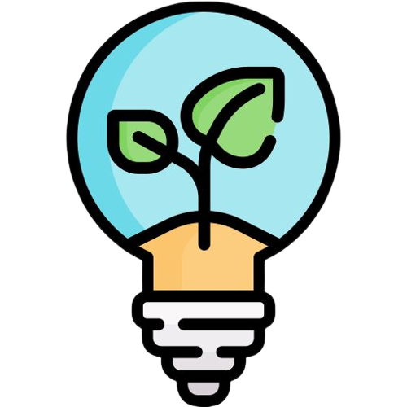
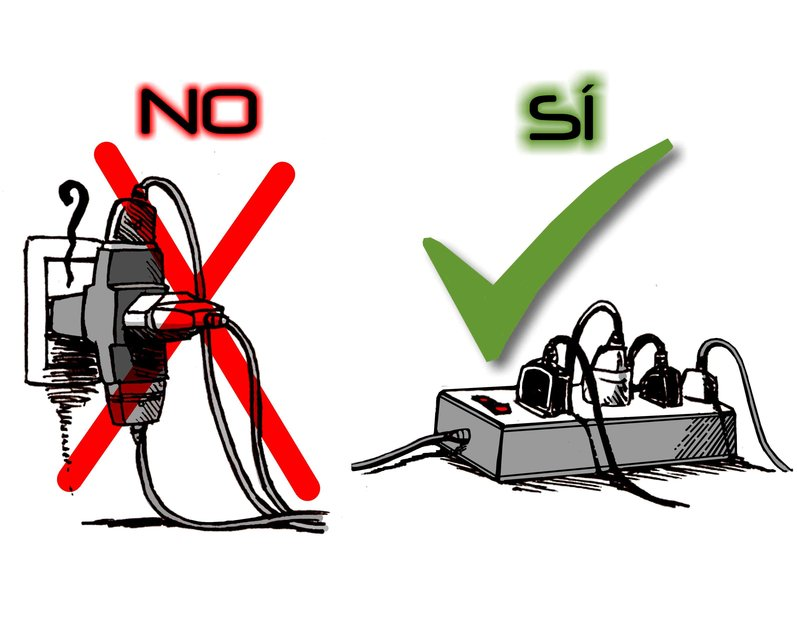

¿Qué es el ahorro de energía?
El ahorro o eficiencia energética consiste en utilizar la energía de mejor manera. Es decir, con la misma cantidad de energía o con menos, obtener los mismos resultados. Esto se puede lograr a través del cambio de hábitos, del uso tecnologías más eficientes, o una combinación de ambos.
¿Por qué es importante?
La generación de energía tiene impactos ambientales. Ahorrar energía ayuda a reducir este impacto y contribuye a combatir los efectos del calentamiento global y del cambio climático. Asimismo, las acciones de eficiencia energética hacen que los gastos en energía disminuyan. Recuerda que no hay energía más limpia y barata que la que no se consume.
¿Qué es lo que puedes hacer tu para contribuir?
A continuación te compartimos los consejos de la CFE (Comision Federal de Electricidad) encargada de la electricidad en nuestro país.
LightbulbUsa focos ahorradores
Iluminan igual que los incandescentes y consumen 75% menos energía.

Clear_DayAprovecha la luz natural del día
Mediante la orientación adecuada de ventanas, y usa colores claros en paredes, techos, pisos y mobiliario.

Toggle_OffApaga focos y desconecta aparatos
Algunos de ellos, aún apagados, consumen energía. Si nadie ve la televisión o escucha la radio, ¡apágalos!

Electrical_ServicesNo conectes varios aparatos en un mismo enchufe
Podría sobrecargar la instalación eléctrica y provocar un accidente.

IronPlancha
Ahorra energía eléctrica al planchar la mayor cantidad de ropa, primero la gruesa y antes de terminar, desconecta la plancha y aprovecha su calor con las prendas de tela delgada.

Local_Laundry_ServiceLavadora
- Carga al máximo permisible, así disminuirás el número de sesiones de lavado.
- Utiliza solo el detergente necesario; el exceso produce mucha espuma y hace trabajar el motor más de lo conveniente.

MicrowaveMicroondas
- No abras la puerta hasta que finalice la cocción de tus alimentos.
- Límpialo frecuentemente, los restos orgánicos consumen energía extra.
- Coloca los alimentos en refractarios diseñados para el microondas.
- Corta los alimentos para que secalienten más rápido.

Stadia_ControllerConsola de videojuegos
- Desconéctala cuando no la uses;también sus accesorios.
- Mantenla limpia y bien ventilada.
- Usa laptop o tableta para reproducir videos de internet; la consola consume 10 veces más energía.
- Activa la opción de ahorro de energía.

Tv_GenTelevisión
- Apágala y desenchúfala cuando no la estés usando.
- Mantenla limpia y en un lugar ventilado.

KitchenRefrigerador
- Ubícalo lejos de fuentes de calor,como la estufa y rayos del sol.
- Colócalo a una distancia de al menos 10 cm de la pared para una buena ventilación.
- Mantenlo limpio (incluyendo la parte trasera).
- Evita guardar alimentos calientes.

ComputerComputadora de escritorio y Laptop
- Activa la opción de ahorro de energía.
- Si está conectada a un regulador,apágalo al final del día.
- Apaga su monitor cuando no lo utilices.
- Reduce la cantidad de aplicaciones abiertas.
- Reduce el brillo de la pantalla.

Device_ThermostatAire acondicionado
- Limpia los filtros una vez por semana.
- Si tiene más de 10 años de antiguedad consume más electricidad.
- Al sustituir el aire acondicionado verifica que tenga el sello de eficiencia energética.
- Revisa el sistema completo 2 veces al año.

La generación de energía eléctrica inició en México a fines del siglo XIX. La primera planta generadora que se instaló en el país (1879) estuvo en León, Guanajuato, y era utilizada por la fábrica textil "La Americana".
Refractario es un término que se refiere a cualquier utensilio o recipiente que esté diseñado para soportar altas temperaturas y cambios bruscos de temperatura, como los que ocurren cuando se hornea o se cocina a fuego directo.
Inicio